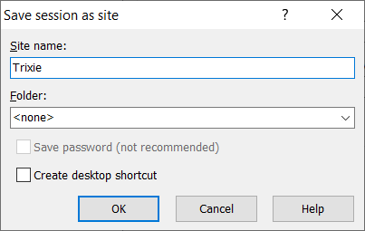

Overview¶
This document will describe various procedures for transferring files to and from Trixie.
Important Note: For external users, before proceeding with this configuration, please ensure that you have performed the external access setup and advanced configuration procedures.
Transfers Between Your Local Computer and Trixie¶
The following sections detail how to transfer files between your local computer and Trixie. They basically rely on advanced SSH configurations to bridge the network between your local computer and Trixie.
Mac OSX / Linux¶
To copy a file to the Trixie server, please use the scp command on your local machine.
External Users¶
Please note that the use of this method requires that your system be configured as detailed in the advanced configuration in order to provide a direct link between your local machine and the Trixie server.
The following command will copy the file test.txt from John Doe’s local machine to his admin.john.doe account on Trixie. Please note that using trixie as the hostname will only work if you have configured SSH to use ProxyJump as detailed in the advanced configuration.
scp test.txt trixie:/home/admin.john.doe
To copy a file from Trixie to your local machine, you basically reverse the arguments to the scp command.
scp trixie:/home/admin.john.doe/test.txt test.txt
To copy an entire directory instead of just a file, please use the –r option (for recursive) to the scp command.
scp –r myWorkFilesDir trixie:/home/admin.john.doe
Internal Users¶
The following command will copy the file test.txt from John Doe’s local machine to his account on Trixie. Please note that the example assumes the username on Trixie is different than the username on the local machine.
scp test.txt doej@trixie.res.nrc.gc.ca:/home/doej
To copy a file from Trixie to your local machine, you basically reverse the arguments to the scp command.
scp doej@trixie.res.nrc.gc.ca:/home/doej/test.txt test.txt
To copy an entire directory instead of just a file, please use the –r option (for recursive) to the scp command.
scp –r myWorkFilesDir doej@trixie.res.nrc.gc.ca:/home/doej
Windows Using WinSCP¶
To copy a file to the Trixie server, please use the WinSCP command on your local machine.
External Users¶
If you need to install WinSCP then please download and install it from this site
First you will need to configure WinSCP to connect to Trixie using an SSH tunnel. Open WinSCP and follow the procedure below to configure it to access Trixie via an SSH tunnel.
- Click the New Session button
 2. In the window that pops up, perform the following
2. In the window that pops up, perform the following
- Make sure the File protocol is set to SCP
- Set the Host name: trixie.res.nrc.gc.ca
-
Set the User name: \
<br>The window should now look similar to the following 4. Click the Advanced button
3. In the window that pops up, perform the following
4. Click the Advanced button
3. In the window that pops up, perform the following -
Click the Tunnel item in the left pane
- Select the Connect through SSH tunnel option
- Set Host name: trixie.nrc-cnrc.gc.ca
-
Set User name: \
<span>@pub.nrc-cnrc.gc.ca<br>The window should now look similar to the following 5. Click the OK button
4. Click the Save button in the previous popup window
5. In the window that pops up, perform the following
5. Click the OK button
4. Click the Save button in the previous popup window
5. In the window that pops up, perform the following -
Type in a Site name - perhaps Trixie
<br>The window should now look similar to the following 2. Click the OK button 6. Click the Login button in the previous popup window
<br>You will be prompted to authenticate with LoginTC (you will need to type 1) and both your Pub and Trixie passwords 7. Once you are logged into your session, you can drag and drop the files you need to transfer between the two file listings
Internal Users¶
If you need to install WinSCP then please install it from the NRC Software Portal on your desktop.
First you will need to configure WinSCP to connect to Trixie. Open WinSCP and follow the procedure below to configure it to access Trixie.
- Click the New Session button
2. In the window that pops up, perform the following
- Make sure the File protocol is set to SCP
- Set the Host name: trixie.res.nrc.gc.ca
-
Set the User name: \
<br>The window should now look similar to the following 4. Click the Save button
3. In the window that pops up, perform the following
4. Click the Save button
3. In the window that pops up, perform the following -
Type in a Site name - perhaps Trixie
<br>The window should now look similar to the following2. Click the OK button 4. Click the Login button in the previous popup window
<br>You will be prompted to authenticate with your Trixie password 5. Once you are logged into your session, you can drag and drop the files you need to transfer between the two file listings
Windows Using the pscp Command From Putty¶
To copy a file to the Trixie server, please use the pscp command on your local machine.
External Users - this process does not work at the moment¶
Please note that the use of this method requires that you have two Putty profiles defined.
- A profile for the bastion server
- A profile for the Trixie server
Bastion Server Profile¶
The bastion server profile was likely created during the setup configuration for your external access to Trixie. If not, then please see the initialize SSH connection section for detailed instructions on creating a profile for the bastion server.
Trixie Server Profile¶
Follow the procedure below to create the Trixie server profile.
Under Session
- Set Host Name (or IP address): \
<span>@trixie.res.nrc.gc.ca - Set Port: 22
- Add a name for Saved Sessions – perhaps Trixie-pscp
 4. Click Save
4. Click Save
Once you have the profiles created and saved, please follow the procedure below to run the pscp command.
- Load the Bastion profile and click Open
- Login to the bastion server and leave the window open
- Open a Command Prompt window
-
Use the pscp command in the Command Prompt window to copy files to or from the trixie server using the Trixie-pscp putty profile
-
Copy the file
test.txtfrom John Doe’s local machine to his admin.john.doe account on trixiepscp test.txt Trixie-pscp:/home/admin.john.doe2. To copy a file from trixie to your local machine, you basically reverse the arguments to the pscp commandpscp Trixie-pscp:/home/admin.john.doe/test.txt test.txt3. To copy an entire directory instead of just a file, please use the –r option (for recursive) to the pscp commandpscp –r myWorkFilesDir Trixie-pscp:/home/admin.john.doe
Internal Users¶
Please note that the use of this method requires that you have a Putty profile defined to access the Trixie server. Follow the procedure below to create the Trixie server profile.
Under Session
- Set Host Name (or IP address): \
<span>@trixie.res.nrc.gc.ca - Set Port: 22
- Add a name for Saved Sessions – perhaps Trixie-pscp
 4. Click Save
4. Click Save
Once you have the profile created and saved, please follow the procedure below to run the pscp command.
- Open a Command Prompt window
-
Use the pscp command in the Command Prompt window to copy files to or from the trixie server using the Trixie-pscp putty profile
-
Copy the file
test.txtfrom John Doe’s local machine to his doej account on trixiepscp test.txt Trixie-pscp:/home/doej2. To copy a file from trixie to your local machine, you basically reverse the arguments to the pscp commandpscp Trixie-pscp:/home/doej/test.txt test.txt3. To copy an entire directory instead of just a file, please use the –r option (for recursive) to the pscp commandpscp –r myWorkFilesDir Trixie-pscp:/home/doej
Transfers Between Trixie and Another HPC Cluster¶
Needs verification that this is accurate and works, as well as real parameters for the command lines please¶
The procedures in this section assume that the advanced SSH configurations discussed above have been implemented. There are three options for copying files between Trixie and another HPC cluster
- Copy files directly between Trixie and the HPC cluster
- Login to Trixie from the other HPC cluster
- Copy files through your local computer
Copy Files Directly¶
This procedure requires that there is an approved network flow open between Trixie and the second HPC cluster. Please see the external HPC systems page for a list of approved external HPC systems. If there is an approved network flow, then files can be directly copied between Trixie and the second HPC cluster. This is the ideal situation and should be the fastest option in terms of overall network speed between the two systems.
To copy a file from the second HPC cluster to Trixie, use the following scp command on the Trixie server.
scp username@cluster.domain:/home/username/test.txt test.txt
To copy a file from Trixie to the second HPC cluster, you basically reverse the arguments to the scp command.
scp test.txt username@cluster.domain:/home/username/test.txt
To copy an entire directory instead of just a file, please use the –r option (for recursive) to the scp command.
scp –r myWorkFilesDir username@cluster.domain:/home/username/folder
Login to Trixie From Second Cluster¶
This procedure requires that you have an external account setup to access Trixie. If this is the case, then files can be copied between Trixie and the second HPC cluster via the Bastion Host, but without flowing through your local computer. To use this approach, you will need to login to the second HPC cluster first, and then from the second HPC cluster computer, login to Trixie through the Bastion host.
To copy a file from the second HPC cluster to Trixie, use the following scp command on the Trixie server.
scp username@cluster.domain:/home/username/test.txt test.txt
To copy a file from Trixie to the second HPC cluster, you basically reverse the arguments to the scp command.
scp test.txt username@cluster.domain:/home/username/test.txt
To copy an entire directory instead of just a file, please use the –r option (for recursive) to the scp command.
scp –r myWorkFilesDir username@cluster.domain:/home/username/folder
Copy Files Through Your Local Computer¶
This procedure requires that you copy files between the two clusters using your local computer as a bridge. The commands below should be executed on your local computer and not either of the cluster servers.
To copy a file from the second HPC cluster to Trixie, use the following scp command on your local computer.
scp username@cluster.domain:/home/username/test.txt trixie:/home/admin.john.doe/test.txt
To copy a file from Trixie to the second HPC cluster, you basically reverse the arguments to the scp command.
scp trixie:/home/admion.john.doe/test.txt username@cluster.domain:/home/username/test.txt
To copy an entire directory instead of just a file, please use the –r option (for recursive) to the scp command.
scp –r trixie:/home/admin.john.doe/myWorkFilesDir username@cluster.domain:/home/username/folder
Copy Files to a Project Folder¶
Project folders have been created for users to use for a couple of purposes:
- Storage of data files to use with Trixie. Although you can use your home directory for limited storage of files, it is strongly recommended that you use the project folder instead as there are higher disk quotas for project folders.
- Sharing of project work and files with team members
Please note that users should be diligent and remove any files and folders (in both the project folder and your home folder) once they are no longer required. This helps to optimize disk usage and avoid disk space issues for all users, not just your own usage.
The project folder can be found under the following folder hierarchy
/gpfs/projects/<project-group>/<project>
Where project-group is the name of your project group – for example, AI4D or COVID - and project is the name of your project – for example, core-01 or bio-01.
To copy files to a project folder you should create a personal folder under the project directory and then copy files from your home directory to the new folder. In the example below user John Doe will copy two dataset files to the AI4D/bio-01 project folder.
- Change directory to the project folder
cd /gpfs/projects/AI4D/bio-01
2. Create the new folder using a unique name, perhaps your last name and first initial
mkdir doej
3. Change back to your home directory
cd
4. Copy the files to your new project directory
cp dataset1.dat dataset2.dat /gpfs/projects/AI4D/bio-01/doej